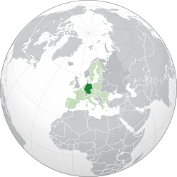

🎼 Cultura e Pensamento
Conhecida como a "Terra dos Poetas e Pensadores" (Das Land der Dichter und Denker).
Música: Berço de gênios como Beethoven, Bach e Brahms.
Filosofia: Lar de grandes mentes como Kant, Hegel e Nietzsche.


A Alemanha é famosa por sua engenharia de precisão, festivais folclóricos e uma história que moldou o mundo moderno. É um país onde cidades ultra-tecnológicas se misturam a florestas densas e vilarejos medievais.
Conhecida como a "Terra dos Poetas e Pensadores" (Das Land der Dichter und Denker).
Música: Berço de gênios como Beethoven, Bach e Brahms.
Filosofia: Lar de grandes mentes como Kant, Hegel e Nietzsche.
A culinária alemã vai muito além da salsicha, com sabores rústicos e reconfortantes.
A Alemanha é o país das "Autobahns", rodovias famosas por terem trechos sem limite de velocidade. Além disso, o país inventou coisas que usamos todo dia: o formato de áudio MP3, o motor a diesel, a árvore de Natal e até o urso de pelúcia (Teddy Bear)!